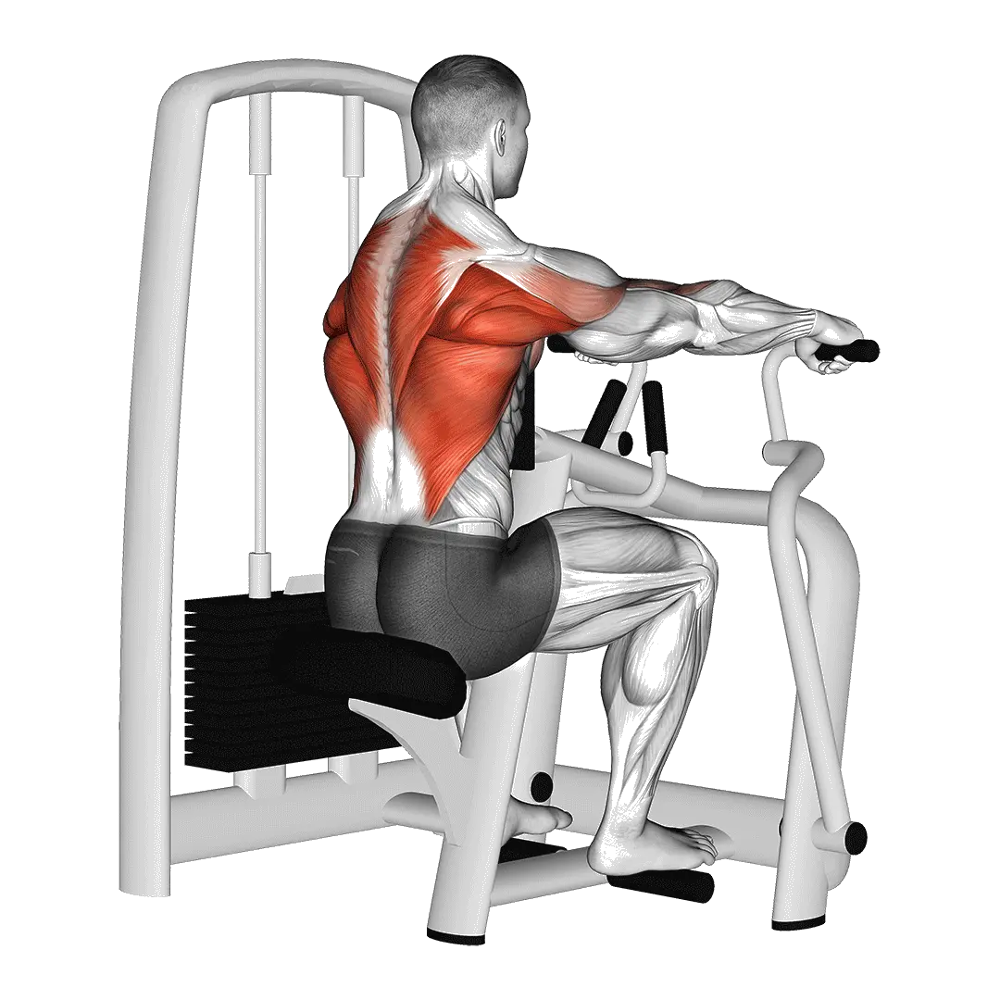

Rudern an der Maschine
Für Rudern an der Maschine kannst du Durchschnittsgewicht und Kraftstandards als Referenz für den Bereich Rücken vergleichen. Die Zielmuskulatur ist Latissimus, Trapezmuskel.

Durchschnittsgewicht: Mittelstufe
Richtwert für eine Person auf mittlerem Niveau.
Männer
222 lb
Frauen
117 lb
Rudern an der Maschine: Durchschnittsgewicht [1RM]
| Level | ||
|---|---|---|
| Einsteiger | 84 lb | 37 lb |
| Anfänger | 143 lb | 71 lb |
| Fortgeschrittene | 222 lb | 117 lb |
| Erfahrene | 318 lb | 175 lb |
| Elite | 426 lb | 241 lb |
Hinweis: Diese Standards sind 1RM-Schätzwerte auf Basis durchschnittlicher Kraftsportlerinnen und Kraftsportler. Körpergewicht, Alter und andere persönliche Faktoren können die Werte beeinflussen. Die detaillierten Daten stehen in der Tabelle unten.
Rudern an der Maschine: Kraftstandards(lb)
Männer nach Körpergewicht (lb) [1RM]
| Körpergewicht | Einsteiger | Anfänger | Fortgeschrittene | Erfahrene | Elite |
|---|---|---|---|---|---|
| 110 | 40 | 79 | 134 | 203 | 283 |
| 120 | 48 | 91 | 149 | 222 | 305 |
| 130 | 57 | 102 | 164 | 240 | 326 |
| 140 | 66 | 114 | 178 | 257 | 346 |
| 150 | 74 | 125 | 192 | 274 | 365 |
| 160 | 82 | 136 | 205 | 290 | 384 |
| 170 | 91 | 146 | 218 | 305 | 401 |
| 180 | 99 | 157 | 231 | 320 | 418 |
| 190 | 107 | 167 | 243 | 334 | 435 |
| 200 | 115 | 177 | 255 | 348 | 451 |
| 210 | 123 | 186 | 267 | 362 | 466 |
| 220 | 130 | 196 | 278 | 375 | 481 |
| 230 | 138 | 205 | 289 | 388 | 496 |
| 240 | 146 | 214 | 300 | 400 | 510 |
| 250 | 153 | 223 | 310 | 412 | 523 |
| 260 | 160 | 232 | 321 | 424 | 537 |
| 270 | 167 | 240 | 331 | 436 | 550 |
| 280 | 174 | 249 | 341 | 447 | 562 |
| 290 | 181 | 257 | 350 | 458 | 575 |
| 300 | 188 | 265 | 360 | 469 | 587 |
| 310 | 195 | 273 | 369 | 479 | 598 |
Männer nach Alter [1RM]
| Alter | Einsteiger | Anfänger | Fortgeschrittene | Erfahrene | Elite |
|---|---|---|---|---|---|
| 15 | 72 | 122 | 189 | 271 | 363 |
| 20 | 82 | 140 | 216 | 310 | 415 |
| 25 | 84 | 143 | 222 | 318 | 426 |
| 30 | 84 | 143 | 222 | 318 | 426 |
| 35 | 84 | 143 | 222 | 318 | 426 |
| 40 | 84 | 143 | 222 | 318 | 426 |
| 45 | 80 | 136 | 211 | 302 | 404 |
| 50 | 75 | 128 | 198 | 283 | 379 |
| 55 | 69 | 118 | 183 | 262 | 351 |
| 60 | 63 | 108 | 167 | 239 | 320 |
| 65 | 57 | 97 | 151 | 216 | 289 |
| 70 | 51 | 87 | 135 | 194 | 260 |
| 75 | 46 | 78 | 121 | 173 | 232 |
| 80 | 41 | 70 | 108 | 155 | 208 |
| 85 | 37 | 63 | 97 | 139 | 186 |
| 90 | 33 | 56 | 87 | 125 | 168 |
Frauen nach Körpergewicht (lb) [1RM]
| Körpergewicht | Einsteiger | Anfänger | Fortgeschrittene | Erfahrene | Elite |
|---|---|---|---|---|---|
| 90 | 22 | 48 | 85 | 134 | 190 |
| 100 | 26 | 53 | 92 | 142 | 200 |
| 110 | 29 | 58 | 99 | 150 | 210 |
| 120 | 32 | 62 | 105 | 158 | 218 |
| 130 | 35 | 67 | 110 | 164 | 226 |
| 140 | 38 | 71 | 116 | 171 | 234 |
| 150 | 41 | 75 | 121 | 177 | 241 |
| 160 | 44 | 79 | 126 | 183 | 248 |
| 170 | 47 | 82 | 130 | 189 | 255 |
| 180 | 50 | 86 | 135 | 194 | 261 |
| 190 | 52 | 89 | 139 | 199 | 267 |
| 200 | 55 | 93 | 143 | 204 | 273 |
| 210 | 57 | 96 | 147 | 209 | 278 |
| 220 | 60 | 99 | 151 | 214 | 284 |
| 230 | 62 | 102 | 155 | 218 | 289 |
| 240 | 65 | 105 | 158 | 222 | 294 |
| 250 | 67 | 108 | 162 | 227 | 298 |
| 260 | 69 | 111 | 165 | 231 | 303 |
Frauen nach Alter [1RM]
| Alter | Einsteiger | Anfänger | Fortgeschrittene | Erfahrene | Elite |
|---|---|---|---|---|---|
| 15 | 32 | 60 | 100 | 149 | 205 |
| 20 | 36 | 69 | 114 | 170 | 235 |
| 25 | 37 | 71 | 117 | 175 | 241 |
| 30 | 37 | 71 | 117 | 175 | 241 |
| 35 | 37 | 71 | 117 | 175 | 241 |
| 40 | 37 | 71 | 117 | 175 | 241 |
| 45 | 35 | 67 | 111 | 166 | 229 |
| 50 | 33 | 63 | 104 | 156 | 215 |
| 55 | 31 | 58 | 96 | 144 | 198 |
| 60 | 28 | 53 | 88 | 131 | 181 |
| 65 | 25 | 48 | 79 | 119 | 164 |
| 70 | 23 | 43 | 71 | 107 | 147 |
| 75 | 20 | 39 | 64 | 95 | 131 |
| 80 | 18 | 34 | 57 | 85 | 117 |
| 85 | 16 | 31 | 51 | 76 | 105 |
| 90 | 15 | 28 | 46 | 69 | 95 |
Hinweis: Angezeigte Gewichte an Maschinen und Kabelzügen können je nach Hersteller abweichen. Nutze sie als Vergleichswert unter ähnlichen Bedingungen.
Zielmuskulatur
| Gruppe | Muskeln |
|---|---|
| Zielmuskulatur | Latissimus, Trapezmuskel |
| Sekundäre Muskeln | Deltamuskel, Teres major |
| Stabilisatoren | Äußere schräge Bauchmuskeln, Rückenstrecker |
| Griff | Unterarmbeuger |
Tracking und Analyse in der Shiba App
Gewichte, Wiederholungen und Fortschritt an einem Ort.
Tabellenhinweise
| Level | Beschreibung | Verteilung |
|---|---|---|
| Einsteiger | Beherrscht die saubere Technik und trainiert seit mindestens 1 Monat regelmäßig. | Untere 5% |
| Anfänger | Trainiert seit mindestens 6 Monaten regelmäßig. | Top 80% |
| Fortgeschrittene | Trainiert seit mindestens 2 Jahren regelmäßig. | Top 50% |
| Erfahrene | Trainiert seit mehr als 5 Jahren regelmäßig. | Top 20% |
| Elite | Trainiert diese Übung seit mehr als 5 Jahren gezielt. | Top 5% |
Weitere Übungen
Rücken
Kurzhantel-Pullover
Rücken / Kurzhantel
Kurzhantel-Reverse Fly
Rücken / Kurzhantel
Brustgestütztes Kurzhantelrudern
Rücken / Kurzhantel
Enger Latzug
Rücken
Reverse Fly an der Maschine
Rücken / Maschine
Latzug im Untergriff
Rücken
Klimmzüge im neutralen Griff
Rücken / Körpergewicht
Straight-Arm Pulldown
Rücken
Reverse Flys am Kabelzug
Rücken / Kabelzug
Yates Row
Rücken
Vorgebeugtes Kurzhantelrudern
Rücken / Kurzhantel
Rückenstrecken
Rücken